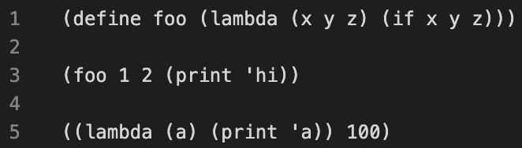

Homework 6 Solutions
Solution Files
You can find the solutions in hw06.scm.
The 61A Scheme interpreter is included in each Scheme assignment. To start it,
type python3 scheme in a terminal. To load a Scheme file called f.scm, type python3 scheme -i f.scm. To exit the Scheme interpreter, type
(exit).
Scheme Editor
All Scheme assignments include a web-based editor that makes it easy to run ok
tests and visualize environments. Type python3 editor in a terminal, and the
editor will open in a browser window (at http://127.0.0.1:31415/). Whatever
changes you make here will also save to the original file on your computer!
To stop running the editor and return to the command line, type Ctrl-C in the
terminal where you started the editor.
The Run button loads the current assignment's .scm file and opens a Scheme
interpreter, allowing you to try evaluating different Scheme expressions.
The Test button runs all ok tests for the assignment. Click View Case for a
failed test, then click Debug to step through its evaluation.
Recommended VS Code Extensions
If you choose to use VS Code as your text editor (instead of the web-based editor), install the vscode-scheme extension so that parentheses are highlighted.
Before:
After:

In addition, the 61a-bot (installation instructions) VS Code extension is available for Scheme homeworks. The bot is also integrated into ok.
Required Questions
Getting Started Videos
These videos may provide some helpful direction for tackling the coding problems on this assignment.
To see these videos, you should be logged into your berkeley.edu email.
Scheme
Q1: Pow
Implement a procedure pow that raises a base to the power of a nonnegative integer exp. The number of recursive pow calls should grow logarithmically with respect to exp, rather than linearly. For example, (pow 2 32) should result in 5 recursive pow calls rather than 32 recursive pow calls.
Hint:
- x2y = (xy)2
- x2y+1 = x(xy)2
For example, 216 = (28)2 and 217 = 2 * (28)2.
You may use the built-in predicates
even?andodd?. Also, thesquareprocedure is defined for you.Scheme doesn't have
whileorforstatements, so use recursion to solve this problem.
(define (square n) (* n n))
(define (pow base exp)
(cond ((= exp 0) 1)
((even? exp) (square (pow base (/ exp 2))))
(else (* base (pow base (- exp 1))))))Use Ok to test your code:
python3 ok -q powWe avoid unnecessary pow calls by squaring the result of base^(exp/2) when exp is even.
The else clause, which is for odd values of exp, multiplies the result of base^(exp-1) by base.
When exp is even, computing base^exp requires one more call than computing base^(exp/2). When exp is odd, computing base^exp requires two more calls than computing base^((exp-1)/2).
So we have a logarithmic runtime for pow with respect to exp.
Q2: Repeatedly Cube
Implement repeatedly-cube, which receives a number x and cubes it n times.
Here are some examples of how repeatedly-cube should behave:
scm> (repeatedly-cube 100 1) ; 1 cubed 100 times is still 1
1
scm> (repeatedly-cube 2 2) ; (2^3)^3
512
scm> (repeatedly-cube 3 2) ; ((2^3)^3)^3
134217728For information on
let, see the Scheme spec.
(define (repeatedly-cube n x)
(if (zero? n)
x
(let
((y (repeatedly-cube (- n 1) x))) (* y y y))))Use Ok to test your code:
python3 ok -q repeatedly-cubeWe know our solution must be recursive because Scheme handles recursion much better than it handles iteration.
The provided code returns x when n is zero. This is the correct base case for repeatedly-cube; we just need to write the recursive case.
In the recursive case, the provided code returns (* y y y), which is the cube of y. We use recursion to set y to the result of cubing x n - 1 times. Then the cube of y is the result of cubing x n times, as desired.
Q3: Cadr
Define the procedure cadr, which returns the second element of a list. Also define caddr, which returns the third element of a list.
(define (cddr s)
(cdr (cdr s)))
(define (cadr s)
(car (cdr s)))
(define (caddr s)
(car (cddr s)))The second element of a list s is the first element of the rest of s. So we define (cadr s) as the car of the cdr of s.
The provided cddr procedure takes a list s and returns a list that starts at the third element of s. So we define (caddr s) as the car of the cddr of s.
Use Ok to test your code:
python3 ok -q cadr-caddrScheme Lists
Q4: Ascending
Implement a procedure called ascending?, which takes a list of numbers s and
returns True if the numbers are in non-descending order, and False
otherwise.
A list of numbers is non-descending if each element after the first is greater than or equal to the previous element. For example...
(1 2 3 3 4)is non-descending.(1 2 3 3 2)is not.
Hint: The built-in
null?procedure returns whether its argument isnil.
Note: The question mark in
ascending?is just part of the procedure name and has no special meaning in terms of Scheme syntax. It is a common practice in Scheme to name procedures with a question mark at the end if it returns a boolean value.
(define (ascending? s)
(if (or (null? s) (null? (cdr s)))
#t
(and (<= (car s) (car (cdr s))) (ascending? (cdr s)))))We approach this much like a standard Python linked list problem.
- Base case: when
shas zero or one items, it is non-descending. - For the recursive case, we check that the second element is greater or equal to the first and that the rest is non-descending.
Use Ok to unlock and test your code:
python3 ok -q ascending -u
python3 ok -q ascendingQ5: My Filter
Write a procedure my-filter, which takes a predicate pred and a list s, and
returns a new list containing only elements of the list that satisfy the
predicate. The output should contain the elements in the same order that they
appeared in the original list.
Note: Make sure that you are not just calling the built-in filter function in Scheme - we are asking you to re-implement this!
(define (my-filter pred s)
(cond ((null? s) '())
((pred (car s)) (cons (car s) (my-filter pred (cdr s))))
(else (my-filter pred (cdr s))))
)
The approach for this problem is to call pred on each element, which we can access with car.
- If a given element satisfies
pred, then it "passes" the filter and can be included in our new list. - If the element does not, then we simply return the recursive call because we should not include the element.
Use Ok to unlock and test your code:
python3 ok -q filter -u
python3 ok -q filterQ6: No Repeats
Implement no-repeats, which takes a list of numbers s. It returns a list
that has all of the unique elements of s in the order that they first appear,
but no repeats.
For example, (no-repeats (list 5 4 5 4 2 2)) evaluates to (5 4 2).
Hint: You may find it helpful to use
filterwith alambdaprocedure to filter out repeats. To test if two numbersaandbare not equal, use(not (= a b)).
(define (no-repeats s)
(if (null? s) s
(cons (car s)
(no-repeats (filter (lambda (x) (not (= (car s) x))) (cdr s))))))For the base case, if the input list is empty, then we do nothing and return the empty list.
Otherwise, we may attempt to proceed with the intuition that removing repeats would require us to keep
track of what elements we have already "seen". However, this would require a helper to keep track of
seen elements. Furthermore, Scheme does not have a built-in containment predicate analog to Python's in keyword.
Thus, we realize that we can instead remove all repeats of an element while iterating through our list. The idea is that as we iterate through an element of the list, we simultaneously remove all other instances of that element from the rest of the list. This ensures that there is only one instance of that element in the list. We achieve this by applying a filter onto the rest of the list.
Use Ok to test your code:
python3 ok -q no_repeatsCheck Your Score Locally
You can locally check your score on each question of this assignment by running
python3 ok --scoreThis does NOT submit the assignment! When you are satisfied with your score, submit the assignment to Gradescope to receive credit for it.
Submit Assignment
Submit this assignment by uploading any files you've edited to the appropriate Gradescope assignment. Lab 00 has detailed instructions.
Extra Credit (1 pt)
During Office Hours and Project Parties, the staff will prioritize helping students with required questions. We will not be offering help with this question unless the queue is empty.
Q7: Longest Increasing Subsequence
Write the procedure longest-increasing-subsequence, which takes in a list lst and returns the
longest subsequence in which all the terms are increasing.
Note: the elements do not have to appear consecutively in the original list. For example, the longest increasing subsequence of
(1 2 3 4 9 3 4 1 10 5) is (1 2 3 4 9 10). Assume that the longest increasing subsequence is unique.
Hint: The built-in procedures
length(documentation) andfilter(documentation) might be helpful to solving this problem.
; helper function
; returns the values of lst that are bigger than x
; e.g., (larger-values 3 '(1 2 3 4 5 1 2 3 4 5)) --> (4 5 4 5)
(define (larger-values x lst)
(filter (lambda (v) (> v x)) lst))
(define (longest-increasing-subsequence lst)
; the following skeleton is optional, remove if you like
(if (null? lst)
nil
(begin
(define first (car lst))
(define rest (cdr lst))
(define large-values-rest
(larger-values first rest)) (define with-first
(cons
(car lst)
(longest-increasing-subsequence large-values-rest))) (define without-first
(longest-increasing-subsequence rest)) (if (> (length with-first) (length without-first)) with-first
without-first))))Use Ok to test your code:
python3 ok -q longest-increasing-subsequenceExam Practice
The following are some Scheme List exam problems from previous semesters that you may find useful as additional exam practice. These questions have no submission component; feel free to attempt them if you'd like some practice!